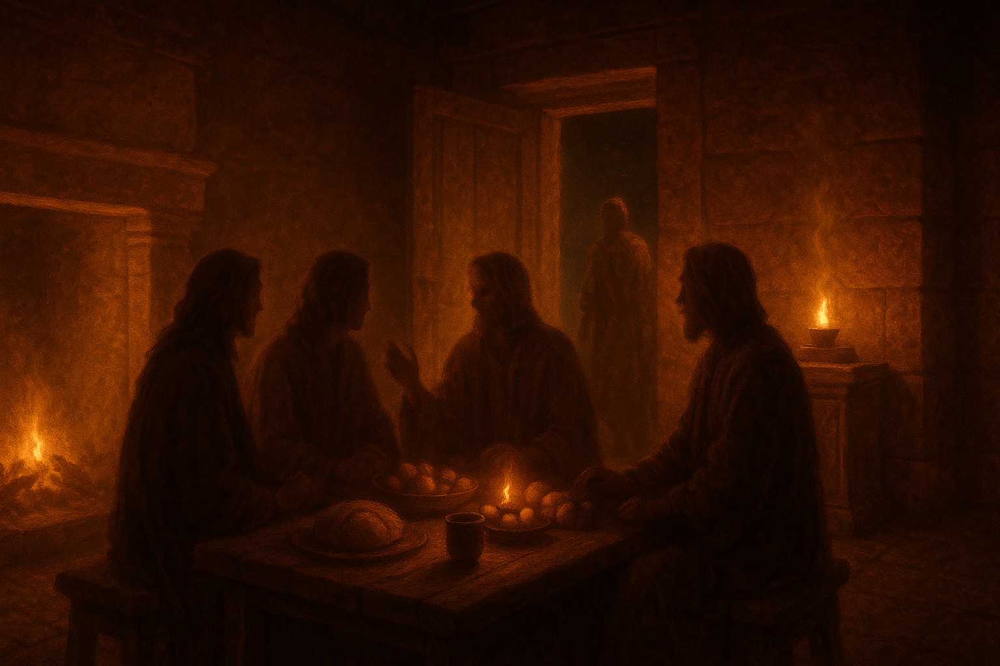

Quoting the Old Testament 86 times, Hebrews is the New Testament's fullest picture of Christ's present high-priestly work in heaven. The word "better" runs through it thirteen times, building toward one conclusion: Christ alone is the better mediator and Savior.
A–D: the doctrinal half, proving Christ's supremacy. E–G: the practical half, calling us to live it out in faith, hope, and love — with five warnings woven throughout.
The old tabernacle and sacrifices repeated endlessly, yet never removed sin. Christ offered himself once, forever effective — mediator of a better covenant, and of a better tabernacle.
All these died in faith, not having received what was promised — God had provided something better for us, so that apart from us they would not be made perfect.
The Lord disciplines those he loves, yielding the peaceful fruit of righteousness. Receiving a kingdom that cannot be shaken, let us worship with reverence and awe.

G · 愛心的實在
G · The Reality of Love, Lived Out
希伯來書 13:1–17 · Hebrews 13:1–17
9 / 10
从至圣所的荣耀，到家中筵席的温暖——真实的信仰活在弟兄相爱、接待客旅、颂赞与行善的日常生活里。
From the glory of the Most Holy Place to the warmth of a shared table — true faith is lived out in brotherly love, hospitality, praise, and good works.